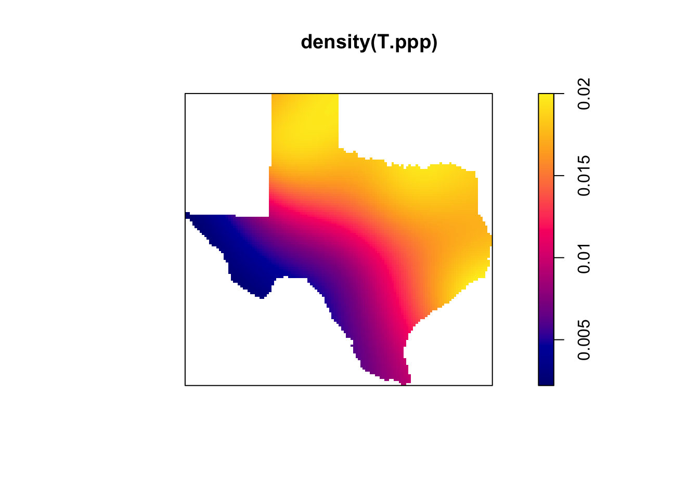

Thursday October 20, 2022
“So much complexity in software comes from trying to make one thing do two things.” - Ryan Singer
Today
- Creating
pppandowinobjects from simple feature data frames - Estimating spatial intensity as a function of distance
- Intensity trend as a possible confounding factor
Last time the terminology of point pattern data including the concept of complete spatial randomness (CSR) was introduced. Focus is typically on natural occurring systems where the spatial location of events is examined through the lens of statistics in an attempt to understand physical processes.
The {spatstat} package is a comprehensive set of functions for analyzing, plotting, and modeling point pattern data. The package requires the data be of spatial class ppp.
The typical work flow includes importing and munging data as a simple feature data frame and then converting the simple feature data frame to a ppp object for analysis and modeling. But it is sometimes convenient to do some of the data munging after conversion to a ppp object.
Creating ppp and owin objects from simple feature data frames
Consider again Kansas tornadoes. Import the data as a simple feature data frame and transform the geographic CRS to Lambert conic conformal centered on Kansas (EPSG:6922). Keep all tornadoes (having an EF damage rating) since 1950 whose initial location occurred within Kansas.
Torn.sf <- sf::st_read(dsn = here::here("data", "1950-2020-torn-initpoint")) |>
sf::st_transform(crs = 6922) |>
dplyr::filter(st == "KS", mag >= 0) |>
dplyr::mutate(EF = factor(mag)) |>
dplyr::select(EF)## Reading layer `1950-2020-torn-initpoint' from data source
## `/Users/jelsner/Desktop/ClassNotes/ASS-2022/data/1950-2020-torn-initpoint'
## using driver `ESRI Shapefile'
## Simple feature collection with 66244 features and 22 fields
## Geometry type: POINT
## Dimension: XY
## Bounding box: xmin: -163.53 ymin: 17.7212 xmax: -64.7151 ymax: 61.02
## Geodetic CRS: WGS 84Torn.sf |>
head()## Simple feature collection with 6 features and 1 field
## Geometry type: POINT
## Dimension: XY
## Bounding box: xmin: 308290.4 ymin: 172079 xmax: 610402.8 ymax: 427368.7
## Projected CRS: NAD83 / Kansas LCC
## EF geometry
## 1 1 POINT (610402.8 238069.8)
## 2 2 POINT (384977.9 172079)
## 3 3 POINT (525374.2 236300.3)
## 4 0 POINT (395720.4 427368.7)
## 5 0 POINT (523250.6 202968.5)
## 6 0 POINT (308290.4 416796.4)The length unit is meters. This can be seen by printing the CRS.
sf::st_crs(Torn.sf)## Coordinate Reference System:
## User input: EPSG:6922
## wkt:
## PROJCRS["NAD83 / Kansas LCC",
## BASEGEOGCRS["NAD83",
## DATUM["North American Datum 1983",
## ELLIPSOID["GRS 1980",6378137,298.257222101,
## LENGTHUNIT["metre",1]]],
## PRIMEM["Greenwich",0,
## ANGLEUNIT["degree",0.0174532925199433]],
## ID["EPSG",4269]],
## CONVERSION["Kansas DOT Lambert (meters)",
## METHOD["Lambert Conic Conformal (2SP)",
## ID["EPSG",9802]],
## PARAMETER["Latitude of false origin",36,
## ANGLEUNIT["degree",0.0174532925199433],
## ID["EPSG",8821]],
## PARAMETER["Longitude of false origin",-98.25,
## ANGLEUNIT["degree",0.0174532925199433],
## ID["EPSG",8822]],
## PARAMETER["Latitude of 1st standard parallel",39.5,
## ANGLEUNIT["degree",0.0174532925199433],
## ID["EPSG",8823]],
## PARAMETER["Latitude of 2nd standard parallel",37.5,
## ANGLEUNIT["degree",0.0174532925199433],
## ID["EPSG",8824]],
## PARAMETER["Easting at false origin",400000,
## LENGTHUNIT["metre",1],
## ID["EPSG",8826]],
## PARAMETER["Northing at false origin",0,
## LENGTHUNIT["metre",1],
## ID["EPSG",8827]]],
## CS[Cartesian,2],
## AXIS["easting (X)",east,
## ORDER[1],
## LENGTHUNIT["metre",1]],
## AXIS["northing (Y)",north,
## ORDER[2],
## LENGTHUNIT["metre",1]],
## USAGE[
## SCOPE["Topographic mapping (small scale)."],
## AREA["United States (USA) - Kansas."],
## BBOX[36.99,-102.06,40.01,-94.58]],
## ID["EPSG",6922]]Further you note that some tornadoes are incorrectly coded as Kansas tornadoes by plotting the event locations.
plot(Torn.sf$geometry)
You recognize the large number of events within the near-rectangle shape of the Kansas border but you also see a few events clearly outside.
Instead of filtering by column name (st == "KS") you can subset by geometry using the sf::st_intersection() function. Here, since we are using the functions in the {spatstat} package, you do this by defining the state border as an owin object.
You get the Kansas border as a simple feature data frame from the {USAboundaries} package transforming the CRS to that of the tornadoes.
KS.sf <- USAboundaries::us_states(states = "Kansas") |>
sf::st_transform(crs = sf::st_crs(Torn.sf))You then create an owin object from the simple feature data frame using the as.owin() function.
suppressMessages(library(spatstat))
KS.win <- KS.sf |>
as.owin()Next you convert the simple feature data frame of tornado reports to a ppp object with the EF damage rating as the marks using the as.ppp() function.
T.ppp <- Torn.sf |>
as.ppp()
plot(T.ppp)
Finally you subset the event locations in the ppp object by the Kansas border using the subset operator ([]).
T.ppp <- T.ppp[KS.win]
plot(T.ppp)
With the T.ppp object you are ready to analyze the tornado locations as spatial point pattern data.
The summary() method summarizes information in the ppp object.
summary(T.ppp)## Marked planar point pattern: 4281 points
## Average intensity 2.008277e-08 points per square unit
##
## *Pattern contains duplicated points*
##
## Coordinates are given to 2 decimal places
## i.e. rounded to the nearest multiple of 0.01 units
##
## Multitype:
## frequency proportion intensity
## 0 2534 0.591917800 1.188735e-08
## 1 1062 0.248072900 4.981990e-09
## 2 453 0.105816400 2.125086e-09
## 3 188 0.043914970 8.819343e-10
## 4 38 0.008876431 1.782633e-10
## 5 6 0.001401542 2.814684e-11
##
## Window: polygonal boundary
## single connected closed polygon with 169 vertices
## enclosing rectangle: [62446.7, 723275.4] x [110798.6, 451072.2] units
## (660800 x 340300 units)
## Window area = 2.13168e+11 square units
## Fraction of frame area: 0.948The output tells you that there are 4281 events (tornado reports) with an average spatial intensity of .0000000201 (2.008277e-08) events per unit area.
The distance unit is meter since that is the length unit in the simple feature data frame (see sf::st_crs(Torn.sf) LENGTHUNIT[“metre”,1]) from which the ppp object was derived. So the area is in square meters making the spatial intensity (number of tornado reports per square meter) quite small.
To make it easier to interpret the intensity convert the length unit from meters to kilometers within the ppp object with the rescale() function from the {spatstat} package (spatstat.geom). The scaling factor argument is s = and the conversion is 1000 m = 1 km so the argument is set to 1000. You then set the unit name to km with the unitname = argument.
T.ppp <- T.ppp |>
spatstat.geom::rescale(s = 1000,
unitname = "km")
summary(T.ppp)## Marked planar point pattern: 4281 points
## Average intensity 0.02008277 points per square km
##
## *Pattern contains duplicated points*
##
## Coordinates are given to 5 decimal places
##
## Multitype:
## frequency proportion intensity
## 0 2534 0.591917800 1.188735e-02
## 1 1062 0.248072900 4.981990e-03
## 2 453 0.105816400 2.125086e-03
## 3 188 0.043914970 8.819343e-04
## 4 38 0.008876431 1.782633e-04
## 5 6 0.001401542 2.814684e-05
##
## Window: polygonal boundary
## single connected closed polygon with 169 vertices
## enclosing rectangle: [62.4467, 723.2754] x [110.7986, 451.0722] km
## (660.8 x 340.3 km)
## Window area = 213168 square km
## Unit of length: 1 km
## Fraction of frame area: 0.948Caution here as you are recycling the object name T.ppp. If you rerun the above code chunk the scale will change again by a factor of 1000 while the unit name will stay the same.
There are 4281 tornado reports with an average intensity of .02 tornadoes per square km over this time period. Nearly 60% of all Kansas tornadoes are EF0. Less than 1% of them are categorized as ‘violent’ (EF4 or EF5). The area of the state is 213,168 square kilometers (km).
Plot the events separated by the marks using the plot() method together with the split() function.
T.ppp |>
split() |>
plot()
Relative to the less damaging tornadoes there are far fewer EF4 and EF5 events.
Can the spatial distribution of Kansas tornadoes be described by complete spatial randomness?
The number of tornadoes varies across the state (EF4 tornadoes are rare in the far western part of the state for example) but it’s difficult to say whether this is due to sampling variation. To illustrate this here you compare the EF1 tornado locations with a sample of events generated under the null hypothesis of CSR.
First create Y as an unmarked ppp object containing only the EF1 tornadoes. You do this by keeping only the events with marks equal to one with the subset() function. Since the marks are a factor you remove the levels with the unmark() function.
( Y <- T.ppp |>
subset(marks == 1) |>
unmark() )## Planar point pattern: 1062 points
## window: polygonal boundary
## enclosing rectangle: [62.4467, 723.2754] x [110.7986, 451.0722] kmThere were 1062 reported EF1 tornadoes originating within the state over the period 1950 through 2020.
The average intensity of the EF1 tornado events is obtained with the intensity() function.
intensity(Y)## [1] 0.00498199On average there has been .005 EF1 tornadoes per square km or 50 per 100 square km.
Make a map to check if things look right.
plot(Y)
EF1 tornado reports are found throughout the state and they appear to be distributed randomly.
Formally: Is the spatial distribution of EF1 tornado reports consistent with a set of event locations that are described as complete spatial randomness?
To help answer this question you construct X to be a set of events generated from a homogeneous Poisson process (a model for CSR) where the intensity of the events is equal to the average intensity of the EF1 tornado reports.
You assign the average intensity to an object called lambdaEF1 and then use rpoispp() (random Poisson point pattern) with lambda set to that intensity and the domain specified with the win = argument.
( lambdaEF1 <- intensity(Y) )## [1] 0.00498199( X <- rpoispp(lambda = lambdaEF1,
win = window(Y)) )## Planar point pattern: 1097 points
## window: polygonal boundary
## enclosing rectangle: [62.4467, 723.2754] x [110.7986, 451.0722] kmThe average intensity of X matches (closely) the average intensity of Y by design and the plot() method reveals a similar looking pattern of event locations.
intensity(X)## [1] 0.00514618plot(X)
While the pattern is similar, there does appear to be a difference. Can you describe the difference?
To make comparisons between the two point pattern data (one observed events and the other simulated) easier you use the superimpose() function to create a single ppp object and assign to Z marks Y and X. Then plot the two intensity rasters split by mark type.
Z <- superimpose(Y = Y,
X = X)## Warning: data contain duplicated pointsZ |>
split() |>
density() |>
plot()
The range of local intensity variations is similar. So we don’t have much evidence against the null model of CSR as defined by a homogeneous Poisson process.
Estimating spatial intensity as a function of distance
Are tornado reports more common in the vicinity of towns?
Based on domain specific knowledge of how these data were collected you suspect that tornado reports will cluster near cities and towns. This is especially true in the earlier years of the record.
This understanding is available from the literature on tornadoes (not from the data) and it is a well-known artifact of the data set, but it had never been quantified until 2013 in a paper we wrote. http://myweb.fsu.edu/jelsner/PDF/Research/ElsnerMichaelsScheitlinElsner2013.pdf.
How was this done? You estimate of the spatial intensity of the observed tornado reports as a function of distance from nearest town and compare that estimate with an estimate of the spatial intensity as a function of distance using randomly placed events across the state.
First get the city locations from the us_cities() function in the {USAboundaries} package. Exclude towns with fewer than 1000 people and transform the geometry to that of the tornado locations.
C.sf <- USAboundaries::us_cities() |>
dplyr::filter(population >= 1000) |>
sf::st_transform(crs = sf::st_crs(Torn.sf))## City populations for contemporary data come from the 2010 census.Create a ppp object of events from the city/town locations in the simple feature data frame. Remove the marks and include only events inside the window object (KS.own). Convert the distance unit from meters to kilometers.
C.ppp <- C.sf |>
as.ppp() |>
unmark()## Warning in as.ppp.sf(C.sf): only first attribute column is used for marksC.ppp <- C.ppp[KS.win] |>
spatstat.geom::rescale(s = 1000,
unitname = "km")
plot(C.ppp)
Next compute a ‘distance map’. A distance map for a spatial domain A is a function \(f(s)\) whose value is defined for any point \(s\) as the shortest distance from \(s\) to any event location in A.
This is done with the distmap() function and the points are the intersections of a 128 x 128 rectangular grid.
Zc <- distmap(C.ppp)
plot(Zc)
The result is an object of class im (image raster). Distances are in kilometers. Most points in Kansas are less than 50 km from the nearest town (reds and blues) but some points are more than 80 km away (yellow).
Other distance functions include pairdist(), which is the pairwise distance between all event pairs and crossdist(), which is the distance between events from two point patterns. The nndist() computes the distance between an event and its nearest neighbor event.
The distance map (distance from any point in Kansas to the nearest town) is used to quantify the population bias in the tornado records.
This is done with rhohat() which estimates the smoothed spatial intensity as a function of some explanatory variable. The relationship between spatial intensity and an explanatory variable is sometimes called a ‘resource selection’ function (if the events are organisms and the variable is a descriptor of habitat) or a ‘prospectivity index’ (if the events are mineral deposits and the variable is a geological variable).
The method assumes the events are a realization from a Poisson process with intensity function \(\lambda(u)\) of the form
\[ \lambda(u) = \rho[Z(u)] \]
where \(Z\) is the spatial explanatory variable (covariate) function (with continuous values) and \(\rho(z)\) is a function to be estimated.
The function does not assume a particular form for the relationship between the point pattern and the variable (thus it is said to be ‘non-parametric’).
Here you use rhohat() to estimate tornado report intensity as a function of distance to nearest city.
The first argument in rhohat() is the ppp object for which you want the intensity estimate and the covariate = argument is the spatial variable, here as object of class im. By default kernel smoothing is done using a fixed bandwidth. With method = "transform" a variable bandwidth is used.
rhat <- rhohat(Y,
covariate = Zc,
method = "transform")
class(rhat)## [1] "rhohat" "fv" "data.frame"The resulting object (rhat) has three classes including a data frame. The data frame contains the explanatory variable as a single vector (Zc), an estimate of the intensity at the distances (rho), the variance (var) and upper (hi) and lower (lo) uncertainty values (point-wise).
rhat |>
data.frame() |>
head()## Zc rho ave var hi lo
## 1 0.06485354 0.008502416 0.00498199 3.757291e-07 0.009703810 0.007301021
## 2 0.25954706 0.008488610 0.00498199 3.734674e-07 0.009686383 0.007290838
## 3 0.45424058 0.008473656 0.00498199 3.710128e-07 0.009667487 0.007279826
## 4 0.64893409 0.008456981 0.00498199 3.682946e-07 0.009646430 0.007267532
## 5 0.84362761 0.008438888 0.00498199 3.653497e-07 0.009623571 0.007254204
## 6 1.03832112 0.008419443 0.00498199 3.621863e-07 0.009598987 0.007239899Here you put these values into a new data frame (df) multiplying the intensities by 10,000 (so areal units are 100 sq. km) then use ggplot() method with a geom_ribbon() layer to overlay the uncertainty band.
df <- data.frame(dist = rhat$Zc,
rho = rhat$rho * 10000,
hi = rhat$hi * 10000,
lo = rhat$lo * 10000)
library(ggplot2)
ggplot(data = df) +
geom_ribbon(mapping = aes(x = dist, ymin = lo , ymax = hi), alpha = .3) +
geom_line(mapping = aes(x = dist, y = rho), color = "red") +
geom_hline(yintercept = intensity(Y) * 10000, color = "blue") +
scale_y_continuous(limits = c(0, 100)) +
ylab("Tornado reports (EF1) per 100 sq. km") +
xlab("Distance from nearest town center (km)") +
theme_minimal()
The vertical axis on the plot is the tornado report intensity in units of number of reports per 100 square kilometers. The horizontal axis is the distance to nearest town in km. The red line is the average spatial intensity as a function of distance from nearest town. The 95% uncertainty band about this estimate is shown in gray.
At points close to the town center tornado reports are high relative to at points far from town. The blue line is the average intensity across the state computed with the intensity() function and scaled appropriately. At points within about 15 km the tornado report intensity is above the statewide average intensity. At points greater than about 60 km the report intensity is below the statewide average.
At zero distance from a town, this number is more than 1.7 times higher (85 tornadoes per 100 sq. km). The spatial scale is about 15 km (distance along the spatial axis where the red line falls below the blue line).
At this point in the analysis you need to think that although the plot look reasonable based on your expectations of a population bias in the tornado reports (more reports near cities/towns), could this result be an artifact of the smoothing algorithm?
You need to know how to apply statistical tools to accomplish specific tasks. But you also need to be a bit skeptical of the tool’s outcome. The skepticism provides a critical check against being fooled by randomness.
As an example, the method of computing the spatial intensity as a function of a covariate should give you a different answer if events are randomly distributed. If the events are randomly distributed, what would you expect to find on a plot such as this?
You already generated a set of events from a homogeneous Poisson model so you can check simply by applying the rhohat() function to these events using the same set of city/town locations.
rhat0 <- rhohat(X,
covariate = Zc,
method = "transform")
df <- data.frame(dist = rhat0$Zc,
rho = rhat0$rho * 10000,
hi = rhat0$hi * 10000,
lo = rhat0$lo * 10000)
ggplot(df) +
geom_ribbon(aes(x = dist, ymin = lo , ymax = hi), alpha = .3) +
geom_line(aes(x = dist, y = rho), color = "red") +
geom_hline(yintercept = intensity(Y) * 10000, color = "blue") +
scale_y_continuous(limits = c(0, 100)) +
ylab("Random events per 100 sq. km") +
xlab("Distance from nearest town center (km)") +
theme_minimal()
As expected, the number of random events near cities/towns is not higher than the number of random events at greater distances. The difference between the two point pattern data sets can be explained by the clustering of actual tornado reports in the vicinity of towns.
Intensity trend as a possible confounding factor
Quantifying the report bias with the spatial intensity function works well for Kansas where there is no trend in the local intensity. Local tornado intensity is largely uniform across Kansas.
Things are different in Texas where a significant intensity trend makes it more difficult to estimate the report bias.
Convert the tornado reports (EF1 or worse) occurring over Texas as a ppp object. Use a Texas-centric Lambert conic conformal projection.
Torn.sf <- sf::st_read(dsn = here::here("data", "1950-2020-torn-initpoint")) |>
sf::st_transform(crs = 3082) |>
dplyr::filter(mag >= 0)## Reading layer `1950-2020-torn-initpoint' from data source
## `/Users/jelsner/Desktop/ClassNotes/ASS-2022/data/1950-2020-torn-initpoint'
## using driver `ESRI Shapefile'
## Simple feature collection with 66244 features and 22 fields
## Geometry type: POINT
## Dimension: XY
## Bounding box: xmin: -163.53 ymin: 17.7212 xmax: -64.7151 ymax: 61.02
## Geodetic CRS: WGS 84T.ppp <- Torn.sf |>
as.ppp()## Warning in as.ppp.sf(Torn.sf): only first attribute column is used for marksW <- USAboundaries::us_states(states = "Texas") |>
sf::st_transform(crs = sf::st_crs(Torn.sf)) |>
as.owin()
( T.ppp <- T.ppp[W] |>
spatstat.geom::rescale(s = 1000,
unitname = "km") )## Marked planar point pattern: 8932 points
## marks are numeric, of storage type 'double'
## window: polygonal boundary
## enclosing rectangle: [873.7638, 2116.6498] x [5881.245, 7063.086] kmintensity(T.ppp)## [1] 0.01293119There are 8,932 tornado reports. The distance unit is kilometer. The average intensity is .013 events per square kilometer over this 71-year period (1950-2020).
Next plot the local intensity using a kernel smoother.
T.ppp |>
density() |>
plot()
There is a clear trend of tornado reports from a low number of reports in the southwest part of the state along the Rio Grande to a high number of reports in the northeast part of the state. The statewide average intensity of .013 tornado reports per square km is too high in southwest and too low in the northern.
Next compute and plot the spatial intensity as a smoothed function of distance to nearest town or city. Start by removing the marks on the tornado events assigning the unmarked ppp object to Tum.ppp. Then create a ppp object from the city/town locations and subset the tornado events by the window.
Tum.ppp <- T.ppp |>
unmark()
C.ppp <- C.sf |>
sf::st_transform(crs = sf::st_crs(Torn.sf)) |>
as.ppp() |>
unmark()## Warning in as.ppp.sf(sf::st_transform(C.sf, crs = sf::st_crs(Torn.sf))): only
## first attribute column is used for marksC.ppp <- C.ppp[W] |>
spatstat.geom::rescale(s = 1000,
unitname = "km")Next create a distance map of the city/town locations using the distmap() function.
Zc <- distmap(C.ppp)
plot(Zc)
Finally, compute the intensity of tornadoes as a smoothed function of distance to nearest town/city with the rhohat() function. Prepare the output and make a plot.
rhat <- rhohat(Tum.ppp,
covariate = Zc,
method = "transform")
data.frame(dist = rhat$Zc,
rho = rhat$rho,
hi = rhat$hi,
lo = rhat$lo) |>
ggplot() +
geom_ribbon(aes(x = dist, ymin = lo , ymax = hi), alpha = .3) +
geom_line(aes(x = dist, y = rho), color = "red") +
scale_y_continuous(limits = c(0, NA)) +
geom_hline(yintercept = intensity(Tum.ppp), color = "blue") +
ylab("Tornado reports per sq. km") +
xlab("Distance from nearest town center (km)") +
theme_minimal()
The plot shows that the intensity of the tornado reports is much higher than the average intensity in the vicinity of towns and cities. Yet caution needs to exercised in the interpretation because the trend of increasing tornado reports moving from southwest to northeast across the state is mirrored by the trend in the occurrence of cities/towns. There are many fewer towns in the southwestern part of Texas compared to the northern and eastern part of the state.
You can quantify this effect by specifying a function in the covariate = argument. Here you specify a planar surface with x,y as arguments and x + y inside the function. Here you use the plot() method on the output (instead of creating a data frame and using ggplot()).
plot(rhohat(Tum.ppp,
covariate = function(x,y){x + y},
method = "transform"),
main = "Spatial intensity trend of tornadoes")
Local intensity increases along the axis labeled X starting at a value of 7,400. At value of X equal to about 8,200 the spatial intensity stops increasing.
Units along the horizontal axis are kilometers but the reference (intercept) distance is at the far left. So you interpret the increase in spatial intensity going from southwest to northeast as a change across about 800 km (8200 - 7400).
The local intensity of cities has the same property (increasing from southwest to northeast then leveling off). Here you substitute C.ppp for Tum.ppp in the rhohat() function.
plot(rhohat(C.ppp,
covariate = function(x,y){x + y},
method = "transform"),
main = "Spatial intensity trend of cities")
So the population bias towards more reports near towns/cities is potentially confounded by the fact that there tends to be more cities and towns in areas that have conditions more favorable for tornadoes.
Thus you can only get so far by examining intensity estimates. If your interest lies in inferring the causes of spatial variation in the intensity you will need to look at second order (clustering) properties of the events.